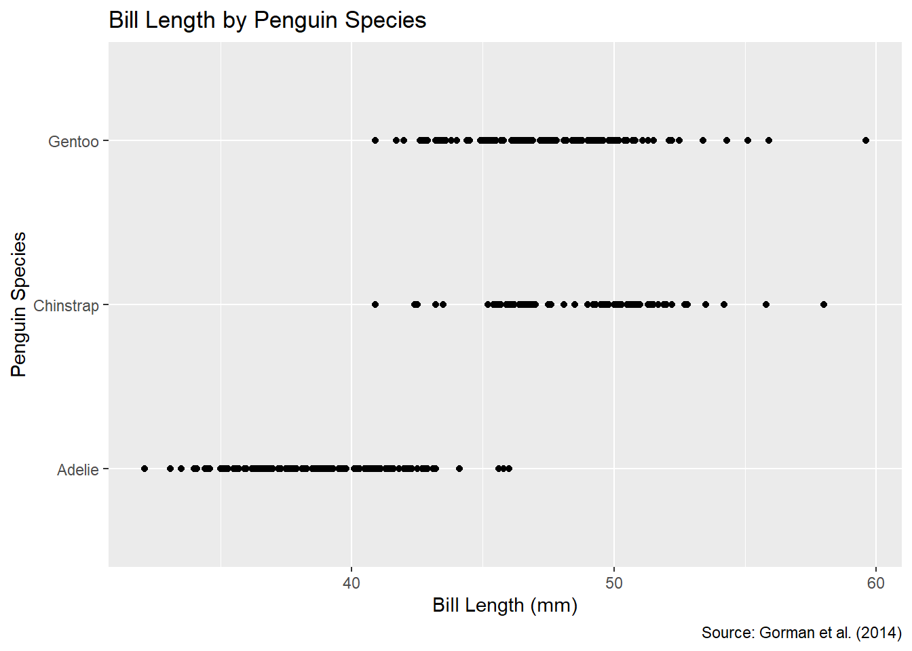
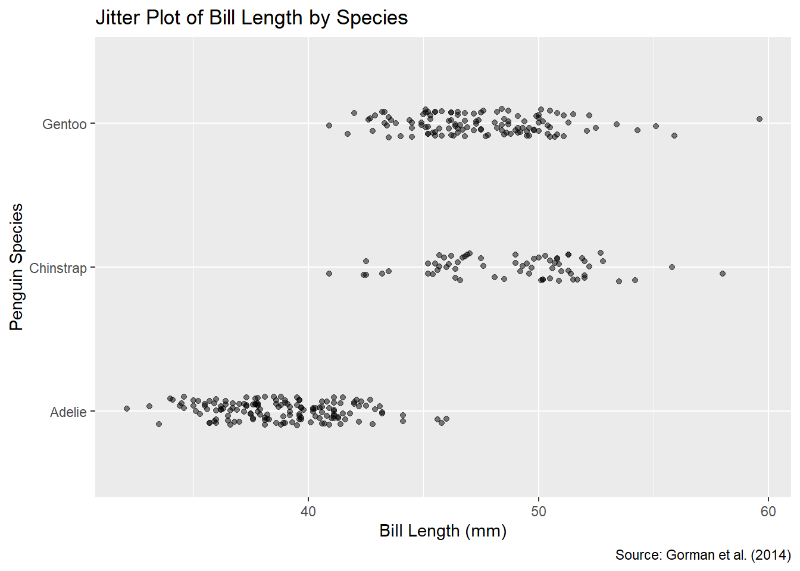
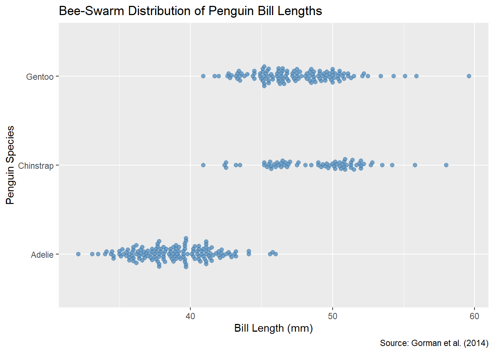
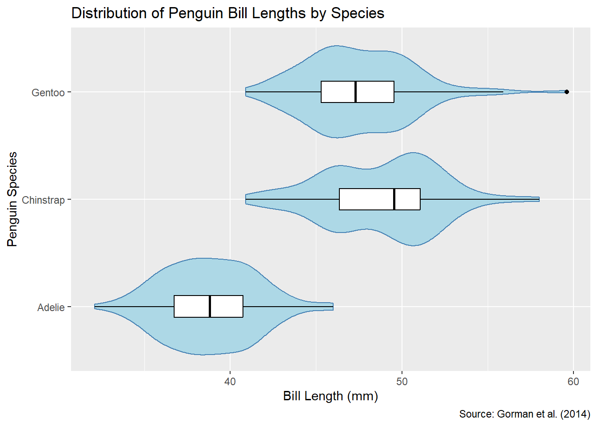
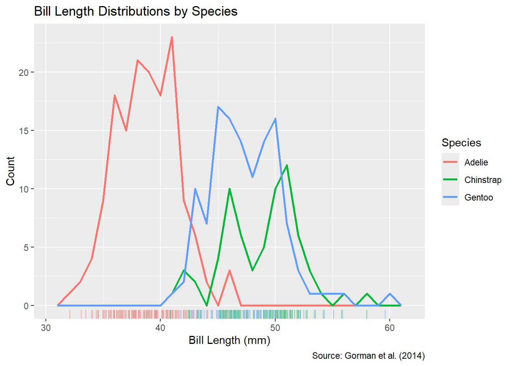
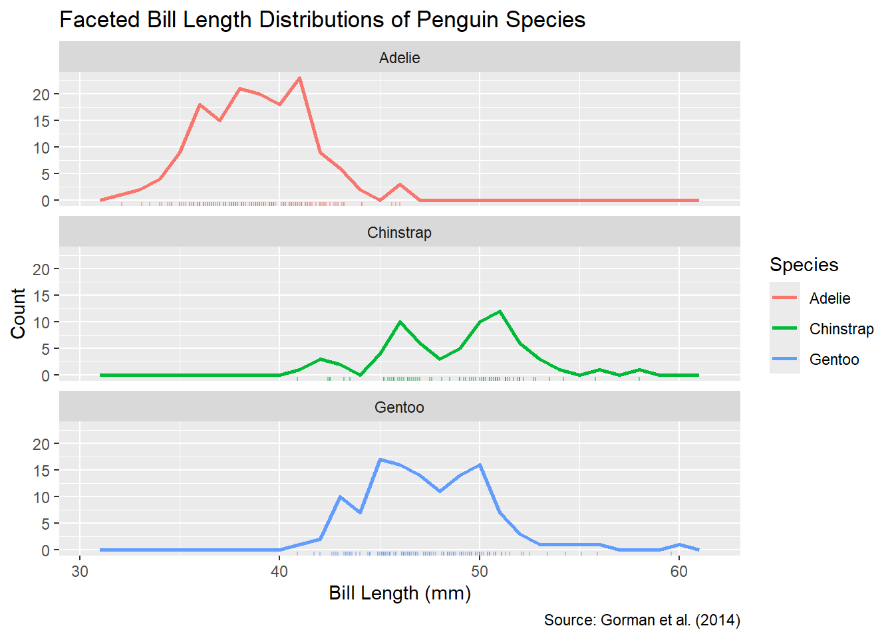

Here we map bill length to the x-axis and species to the y-axis.
We customize axis labels, add a title, and include the requested source citation.
penguins_clean %>%ggplot(aes(x = bill_length_mm,y = species )) +geom_point() +labs(x ="Bill Length (mm)",y ="Penguin Species",title ="Bill Length by Penguin Species",caption ="Source: Gorman et al. (2014)" )

1.3 Why Should You Jitter the Plot?
We noticed in the plain scatter that tons of points land on the same spot—many penguins of the same species have identical bill lengths. Let’s prove it:
Here you’ll get distinct_pairs = 208 out of 342 rows, confirming that 134 measurements overlap. Those overlaps are exactly why a plain geom_point() hides the true number of penguins—jittering will spread them out so we can see each one.
1.4 Jitter Plot
To reveal all individual measurements without changing their exact bill‐length, we’ll add only vertical jitter (so that points don’t overlap within each species strip) and make the points semi-transparent. Here’s the setup:
penguins_clean %>%ggplot(aes(x = bill_length_mm,y = species )) +geom_jitter(width =0, # no horizontal jitterheight =0.1, # small vertical jitter so clusters stay distinctalpha =0.5# semi-transparent points to show overplotting density ) +labs(x ="Bill Length (mm)",y ="Penguin Species",title ="Jitter Plot of Bill Length by Species",caption ="Source: Gorman et al. (2014)" )

What you should see:
Points spread gently up and down around each species line so you can count every observation.
Reduced opacity (α = 0.5) highlights areas where many penguins share the same bill length.
1.5 Pre-requiste: Install ggbeeswarm (only needs to run once)
1.5 Bee-Swarm Plot
A bee-swarm plot arranges points in a compact “swarm,” preserving each exact bill-length on the x-axis but avoiding overlap by stacking them along the y-direction. We’ll use geom_beeswarm() from the ggbeeswarm package.
# load the ggbeeswarm package for geom_beeswarm()library(ggbeeswarm)penguins_clean %>%ggplot(aes(x = bill_length_mm,y = species )) +geom_beeswarm(size =1.8, # medium point sizealpha =0.7, # slightly transparentcolor ="steelblue" ) +labs(x ="Bill Length (mm)",y ="Penguin Species",title ="Bee-Swarm Distribution of Penguin Bill Lengths",caption ="Source: Gorman et al. (2014)" )

What you’ll see:
Each bill-length value sits exactly on the x-axis, but points are offset in the y-direction to avoid overplotting.
Compared to jitter, the beeswarm layout more clearly shows clumps of identical values without random noise.
1.6 Pros and Cons of Bee-Swarm Plots
What I like: Bee-swarms neatly pack every identical bill-length value so you can see the exact counts without any random jitter—no guessing how many points are hiding underneath.
What bugs me: If you have a ton of duplicate measurements, the swarm can balloon or get squeezed, making it hard to compare across species (and it doesn’t scale as gracefully to really large data sets).
1.7 Violin Plot with Boxes
Here we layer a violin plot (to show the full bill‐length distribution for each species) with a skinny box plot (to highlight the median and interquartile range).
penguins_clean %>%ggplot(aes(x = bill_length_mm,y = species )) +geom_violin(fill ="lightblue", # soft fill to show densitycolor ="steelblue"# outline color ) +geom_boxplot(width =0.2, # narrow box inside the violinfill ="white", # white box so the violin shows throughcolor ="black"# box outline ) +labs(x ="Bill Length (mm)",y ="Penguin Species",title ="Distribution of Penguin Bill Lengths by Species",caption ="Source: Gorman et al. (2014)" )

What this shows:
Violins: the full shape of each species’ bill‐length distribution (thicker regions mean more penguins at that length).
Boxes: the median line and interquartile range, giving a quick summary of center and spread.
From this, you can see that Adélie bill lengths are tightly clustered, while Gentoo and Chinstrap show wider variation.
1.8 What Does a Violin Plot Add to a Box Plot?
A boxplot tells me the “what” (median, IQR, outliers) but hides the “how” of the distribution. A violin plot actually shows me where the data piles up or thins out—any bumps, extra peaks, long tails, or skew—so I get a real sense of the full shape instead of just a summary.
In short, the violin turns the “skeleton” summary of a boxplot into a “flesh-and-blood” portrait of your data’s actual shape.
1.9 Frequency Polygons with Rug Plot
Next, let’s overlay the three species’ bill‐length distributions in one plot using frequency polygons, and add a colored rug along the bottom to show every individual measurement.
penguins_clean %>%ggplot(aes(x = bill_length_mm,color = species )) +geom_freqpoly(binwidth =1, # 1 mm binssize =1# slightly thicker lines ) +geom_rug(aes(color = species),sides ="b", # draw ticks only on bottomalpha =0.5# semi‐transparent so overlaps darken ) +labs(x ="Bill Length (mm)",y ="Count",color ="Species",title ="Bill Length Distributions by Species",caption ="Source: Gorman et al. (2014)" )
Warning: Using `size` aesthetic for lines was deprecated in ggplot2 3.4.0.
ℹ Please use `linewidth` instead.

What this shows:
Each colored line traces the count of penguins in 1 mm bins for that species.
The rug ticks at the bottom mark every individual bird’s bill length (darker areas where many overlap).
You can quickly compare that Adélie have shorter bills on average, while Gentoo and Chinstrap extend to larger lengths.
1.10 Faceted Frequency Polygons with Rug Plots
Here I split the bill‐length frequency polygons into three separate panels—one per species—and tack a colored rug underneath each to show every individual measurement.
penguins_clean %>%ggplot(aes(x = bill_length_mm)) +# draw a frequency polygon for each speciesgeom_freqpoly(aes(color = species),binwidth =1,size =1 ) +# add a semi‐transparent rug at the bottom of each panelgeom_rug(aes(color = species),sides ="b",alpha =0.5 ) +# facet into one panel per speciesfacet_wrap(vars(species),ncol =1 ) +# labels and titlelabs(x ="Bill Length (mm)",y ="Count",color ="Species",title ="Faceted Bill Length Distributions of Penguin Species",caption ="Source: Gorman et al. (2014)" )

Why this helps:
Each species lives in its own panel, so the lines and rugs don’t overlap across species—much easier to see each distribution’s shape.
The rug ticks still show raw data points, so you can spot gaps or clustering that the polygon alone might smooth over.
1.11 Pros and Cons of Faceting
Strength: Faceting gives each species its own panel, so there’s zero overlap between the curves and rugs—you can really focus on the shape of each distribution without any visual clutter.
Weakness: It eats up a lot of space and forces you to jump between panels if you want to compare species directly, making cross-species comparisons less immediate than when everything’s overlaid in one plot.
1.12 Pairwise 𝑡-Test
To back up our visual impression with statistics, we’ll:
Compute the mean bill length for each species.
Run a pairwise 𝑡-test on bill length by species and report the p-values.
library(dplyr)# 1. Calculate mean bill length per speciespenguins_clean %>%group_by(species) %>%summarize(mean_bill_length_mm =mean(bill_length_mm),.groups ="drop" )
# A tibble: 3 × 2
species mean_bill_length_mm
<fct> <dbl>
1 Adelie 38.8
2 Chinstrap 48.8
3 Gentoo 47.5
Interpretation. On average, Adelie bills are about 38.8 mm, Chinstrap bills about 48.8 mm, and Gentoo bills about 47.5 mm.
Pairwise comparisons using t tests with pooled SD
data: penguins_clean$bill_length_mm and penguins_clean$species
Adelie Chinstrap
Chinstrap <2e-16 -
Gentoo <2e-16 0.0032
P value adjustment method: none
Comparison
p-value
Significance
Adelie vs Chinstrap
< 2 × 10⁻¹⁶
p ≪ 0.05 → significant
Adelie vs Gentoo
< 2 × 10⁻¹⁶
p ≪ 0.05 → significant
Chinstrap vs Gentoo
0.0032
p < 0.05 → significant
In plain terms:
Adélie penguins have significantly shorter bills than both Chinstraps and Gentoos.
Chinstrap bills are also significantly shorter than Gentoo bills.
So all three species differ from one another in mean bill length at the 5% level.